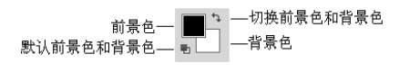

图像绘制
颜色设置
前景色与背景色
前景通常用于绘制图像、填充和描边选区等；背景色常用于生成渐变填充和填充图像中已抹除的区域。在 Photoshop 工具箱的底部有一组前景色和背景色设置按钮。在默认情况下，前景色为黑色，背景色为白色。

- 前景色：单击前景色图标，可以在弹出的“拾色器”对话框中选取一种颜色作为前景色。
- 背景色：单击背景色图标，可以在弹出的“拾色器”对话框中选取一种颜色作为背景色。
- 切换前景色和背景色：快捷键为
X键。 - 默认前景色和背景色：快捷键为
D键。
使用“吸管工具”选取颜色
使用“吸管工具”可以拾取图像中的任意颜色作为前景色。按住 Alt 键进行拾取可将当前拾取的颜色作为背景色。
“颜色”面板
“颜色”面板中显示了当前设置的前景色和背景色，可以在该面板中设置前景色和背景色。执行“窗口 > 颜色”命 令，可发以打开“颜色”面板。
“色板”面板
“色板”面板中默认情况下包含一些系统预设的颜色，单击相应的颜色即可将其设置为前景色。执行“窗口 > 色板”命令，可以打开“色板”面板。
画笔面板
认识“画笔”面板
在认识其他绘制及修饰工具之前首先需要掌握“画笔”面板。“画笔”面板是最重要的面板之一，它可以设置绘画工具和修饰工具的笔刷种类、画笔大小和硬度等属性。
- 笔尖形状设置：在“画笔笔尖形状”选项面板中可以设置画笔的形状、大小、硬度和间距等属性
- “形状动态”选项的设置：“形状动态”可以决定描边中画笔笔迹的变化。它可以使画笔的大小、圆度等产生随机变化的效果。
-
“散布”选项的设置：在“散布”选项面板中可以设置描边中笔迹的数目和位置。使画笔笔迹沿着绘制的线条扩散。
-
“颜色动态”选项的设置：选中“颜色动态”选项。可以通过设置选项绘制出颜色变化的效果。
-
“纹理”选项的设置：使用“纹理”选项可以绘制出带有纹理质感的笔触，例如可以在带纹理的画布上绘制效果等。
-
“双重画笔”选项的设置：首选设置“画笔笔尖形状”主画笔参数属性，然后选择“双重画笔”选项，并从其 面板中选择另外一个笔尖（即双重笔尖）。
- “传递”选项的设置：“传递”选项中包含不透明度、流量、湿度、混合等抖动的控制。可以用来确定油彩在描边路线中的改变方式。
- “画笔笔势”选项的设置：“画笔笔势”选项用于调整毛刷画笔笔尖、侵蚀画笔笔尖的角度。
画笔练习
绘制工具
画笔工具
“画笔工具”是使用频率最高的工具之一，它可以使用前景色绘制出各种线条，同时也可以利用它来修改通道和蒙版。单击该工具，在选项栏中设置合适的画笔大小和画笔样式，在画面中按住鼠标左键并拖动即可以前景色进行绘制。
铅笔工具
使用方法与画笔类似。可以绘制出硬边线条，例如近年来 比较流行的像素画，以及像素游戏。
颜色替换工具
“颜色替换工具”可以将选定的颜色替换为其他颜色。单击该工具，设置目标颜色为前景色，然后在选项栏中设置替换模式、取样等参数，然后在画面中按住鼠标左键涂抹，被涂抹的区域发生颜色变化。
图像擦除工具
橡皮擦工具
“橡皮擦工具”可以将像的像素将变成透明素更改为背景色或透明。使用该工具在图层中按住鼠标左键并拖动即可进行擦除，在普通图层中擦除，在“背景”图层或锁定了透明像素的图层中进行擦除，则擦除的像素将变成背景色。
背景橡皮擦工具
“背景橡皮擦工具”是一种基于色彩差异的智能化擦除工具。其功能非常强大，除了可以用来擦除图像以外，最重要的方面是运用在抠图中。设置好背景色以后，使用该工具可以在抹除背景的同时保留前景对象的边缘。
魔术橡皮擦工具
使用“魔术橡皮擦工具”在图像中单击时，可以将所有相似的像素更改为透明（如果在已锁定了透明像素的图层 中工作，这些像素将更改为背景色）。
橡皮擦练习
图像填充工具
渐变工具
“渐变工具”可以在整个文档或选区内填充渐变色，并且可以创建多种颜色间的混合效果。单击工具箱中的“渐变工具”按钮，在选项栏中单击“渐变颜色条”，在弹出的“渐变编辑器”中编辑渐变颜色，接着在选项栏中设置合适的渐变类型以及模式、不透明度等参数，设置完毕后在画面中按住鼠标左键并拖拽，松开光标后即可在画面中填充渐变。
油漆桶工具
“油漆桶工具”可以在图像中填充前景色或图案，如果创建了选区，填充的区域为当前选区；如果没有创建选区，填充的是与鼠标单击处颜色相近的区域。